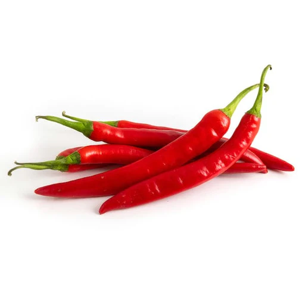
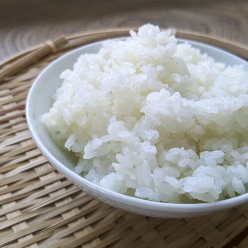

Home
Salt & Pepper Tofu
What is Salt & Pepper Tofu?
It is a nice dish. Trust the process bro of the broskiest.
Ingredients
Salt
Pepper

Tofu
Rice

Steps
Prepare the Tofu
Prepare Salt and Pepper
Cook the Rice
Mash everything together